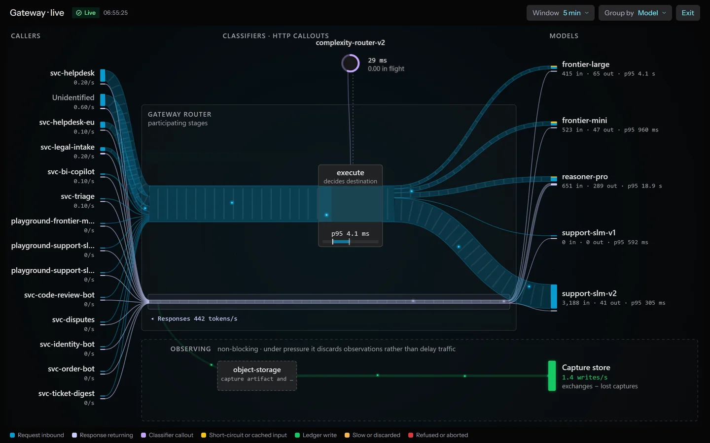
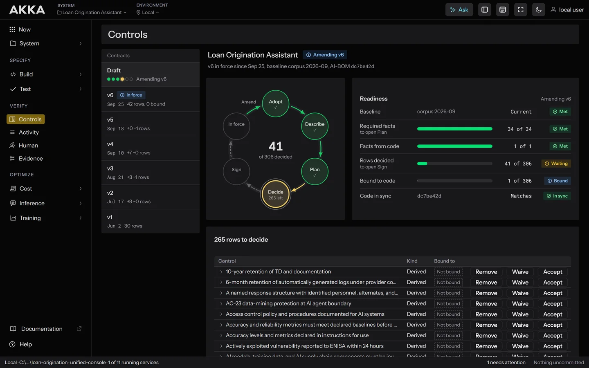
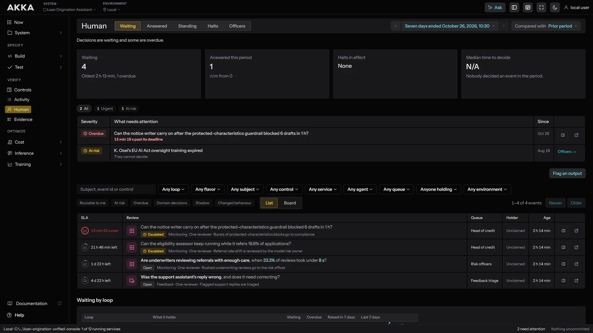
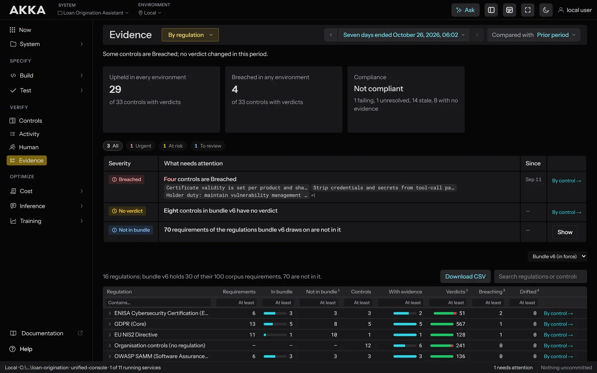

Akka
Scale AI, Efficiently.
An integrated platform.
The platform uses smart shared abstractions to make every AI system as efficient as possible.
| Akka SDK is the component model for building agentic systems. | → |
| Akka Specify is spec-driven development tooling that builds an agentic system from plain-language specifications and checks every change against them. | → |
| Akka Verify applies any control to any AI system and guarantees its enforcement. | → |
| Akka Optimize routes traffic to the best open-weight model and trains smaller ones on your data. | → |
Create agentic systems from composable parts.
Agents and workflows carry behaviour. Entities and views carry durable state. Endpoints, timers and consumers connect the system to everything outside it.
The component client is how one component calls another. Calls are location transparent, so the target can run on any node in the cluster and the runtime routes to it.
An endpoint is how a service is exposed to the outside world. HTTP endpoints accept and return JSON by default.
Workflows run long-running, multi-step business processes while you write only the domain logic. They provide durability and consistency, and can call other components and services.
An agent interacts with an AI model to perform a specific task. It keeps contextual history in session memory, which can be shared with other agents working toward the same goal.
An agent can delegate to specialists, hand off to peers, or lead a team sharing a task list, so multi-agent systems are assembled from focused agents without writing orchestration code.
MCP endpoints expose a service to MCP clients, including LLM desktop applications and agents running on other services. What you expose becomes tools the model can call on its own behalf.
Instead of storing the current state, these persist every event that led to it, written to a journal with ACID semantics.
These persist state as a single current value, keyed by id. Akka guarantees exactly one instance of each entity across the whole cluster, so commands are handled one at a time with no concurrency to reason about.
Views let you read across many entities, or find an entity by something other than its id. Each view is built for a specific access pattern and updates as the underlying entity state changes.
Consumers read a stream of events, from an entity's journal, from key value state changes, or from a message broker topic. They also produce events outward, which is how an Akka service interacts with systems beyond it.
Timers schedule a call to run later, which is useful for checking whether something completed after the fact. They are stored by the runtime and guaranteed to run at least once: if the call fails, the timer reschedules itself until it succeeds.
Binary serialization and protobuf's forward and backward compatibility make service-to-service calls fast and safe to evolve without breaking existing clients.
Specifications and systems that never drift.
Akka Specify generates the system, audits it against your exit conditions, and blocks drift.
A points-based loyalty program with tiered membership, reward redemption, and real-time balance tracking.
- LoyaltyAccount — earn, redeem, tier evaluation
- RewardsProgram — catalog rules, partner integrations
- Rolling 12-month expiry from last earn activity
- Grace period before tier downgrade
- Reward catalog synced daily from external API
- CustomerDashboard — balance, history, current tier
- AdminOverview — program metrics, tier distribution
An entire AI system in one binary.
Agents, controls and model routing compile with the Akka runtime into one service, and its replicas form a cluster without a service mesh.
StartEach replica owns a share of the agent sessions.
ScaleA new replica joins and takes its share.
RecoverA replica fails and its sessions resume on the others.
Route to the best model, from any vendor.

Apply any control to any AI system.
Risk teams govern every agentic system without waiting on its developers, and every control they apply is guaranteed to be enforced.



Every run leaves a durable evidence record you can hand to an auditor, mapped against a corpus of 241 regulations and frameworks.
A platform that guarantees resilience and scalability.
Agentic AI that heals itself when nodes fail.
Efficiency decides which enterprises scale AI.
Deploy into any cloud.
Leverage the Akka cloud with a private data link or have Akka installed into your VPC. Local sandboxes for development and testing are free.
+ Sovereign Plane
24/7 SRE Management & Monitoring
- Live CVE patchingSecurity patches with zero downtime
- No-downtime rolling updatesNo maintenance windows, even schema changes
- Active-active HA/DR
- Elastic scale-to-zeroAuto cold-start; pay for what you use
- Automatic failure recoveryState snapshot & replay, no operator action
- Multi-region operationsRegion-aware routing, one logical system
- Data residency & pinningKeep data in-region for GDPR/CCPA
- Cert & key rotationAutomated credential rotation
- Continuous observabilityOTEL, Prometheus & Splunk export
- Zero-trust access controlTenant isolation & attestation
- Managed migrationsCloud-to-cloud, into VPC, repatriation
- 24/7 on-call & incident responseSomeone is always watching